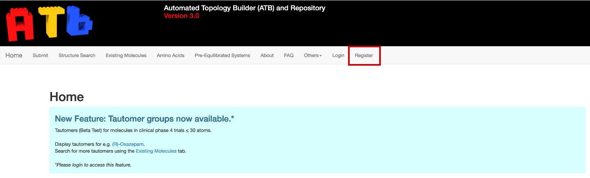
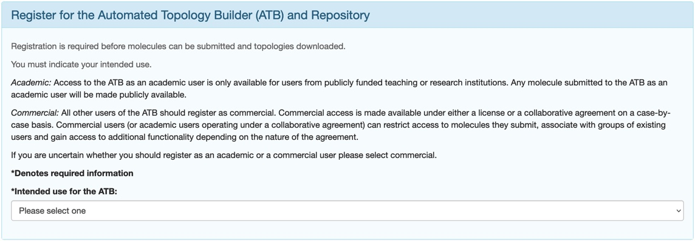
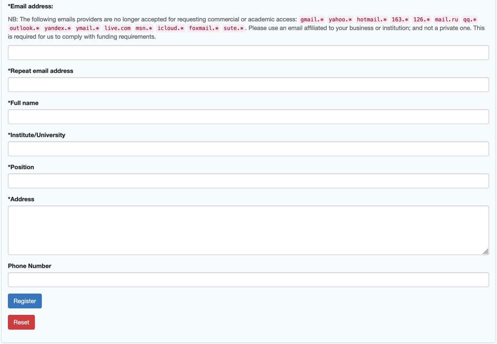
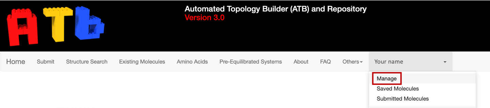
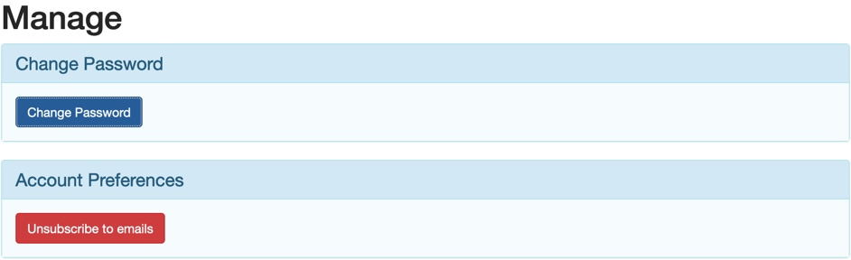
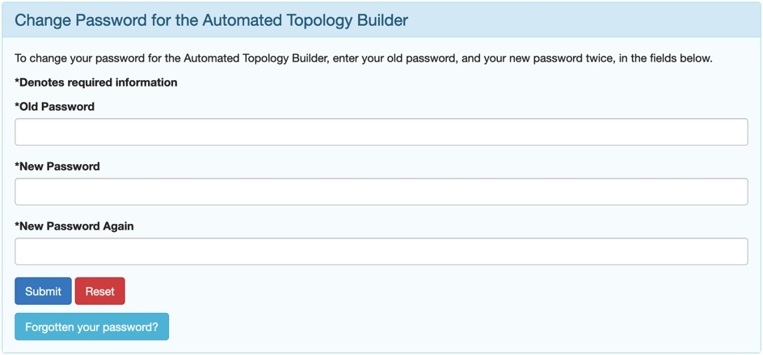

Registering for an ATB Account
It is possible to access many of the basic features of the site directly however in order to submit a new molecule or to download files, you need to be logged into your account. If you do not have an account, you need to create one.
{kind=link}
To do this, navigate to the "Register” tab in the top navigation menu of the ATB website.
{kind=link}
You must state whether you are using the ATB for commercial or academic purposes. If you are using the site for commercial purposes, a range of licensing and collaborative arrangements are possible and will be considered on a case-by-case basis depending on the intended use. Commercial users can restrict access to molecule they submit, share molecule with groups of existing users and gain access to additional functionality depending on the nature of the agreement.
Once you have stated whether you are using the ATB for Commercial or Academic use, other input boxes will appear. An input box with an asterisk denotes required infromation. If you have stated that you will be using the ATB for commercial purposes you must give a detailed description of what you intend to use the ATB for. The decision to give you a commercial account will depend on what you write.
Note
When entering an email address, please be aware that certain email providers can no longer be used. These include gmail, yahoo, Hotmail, 163, 126, mail.ru, qq, outlook, yandex, ymail, live.com, msn, icloud, foxmail and suite. You must instead use an email that is affiliated with your business or institution. Do not use a private one.
Once you have filled in the necessary information, click register.
{kind=link}
Password
Your password will be sent to the email that you used to register your account. You can change this password by first clicking on your profile name in the navigation bar and then selecting "Manage”.
{kind=link}
Selecting "Manage” will open a page that will allow you to change your password, unsubscribe from ATB emails, and update your account details.
{kind=link}
Clicking on the "Change Password” button will open a new webpage. Once you have input your old and new passwords in the appropriate input boxes, click submit to change your password.
{kind=link}